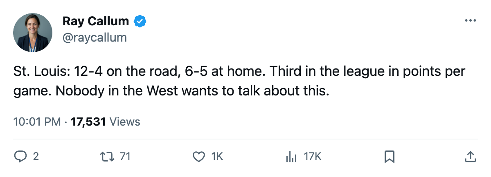
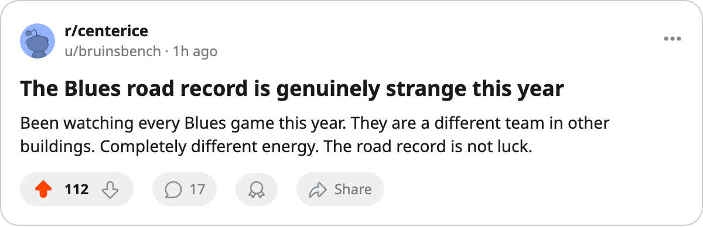

Notes from the West: St. Louis Has Won 12 of 16 on the Road and Sits Second in the Conference
The Blues are 1.44 points per game, third in the league, behind Toronto and New Jersey.
 Ray CallumSenior correspondent · Home Ice Network
Ray CallumSenior correspondent · Home Ice Network
 St. Louis Blues sits second in the Western Conference at 39 points in 27 games, one point behind
St. Louis Blues sits second in the Western Conference at 39 points in 27 games, one point behind  Dallas Stars. The points pace of 1.44 per game is third in the league, behind
Dallas Stars. The points pace of 1.44 per game is third in the league, behind  Toronto Maple Leafs at 1.50 and
Toronto Maple Leafs at 1.50 and  New Jersey Devils at 1.48.
New Jersey Devils at 1.48.
St. Louis is 12-4 on the road and 6-5 in its own building. That's 16 road games with four losses, a 75% clip away from home.  Calgary Flames also has 12 road wins, but Calgary has played 15 road games and dropped 3 of them, while St. Louis has gone 16 and lost 4.
Calgary Flames also has 12 road wins, but Calgary has played 15 road games and dropped 3 of them, while St. Louis has gone 16 and lost 4.
The last 10 games read WLLWWWWWWW, newest first: eight wins in that stretch, 29 goals scored, 21 allowed. The current streak is W1, a 3-2 win over  Nashville Predators on December 7. In 9 divisional games, STL is 5-0-1-3 with 25 goals for and 23 against, and 3 wins with no regulation losses against Nashville.
Nashville Predators on December 7. In 9 divisional games, STL is 5-0-1-3 with 25 goals for and 23 against, and 3 wins with no regulation losses against Nashville.
 Chris Osgood85 started 22 of 27 games, carrying 81% of the starts.
Chris Osgood85 started 22 of 27 games, carrying 81% of the starts.  Brent Johnson84 has 7 games in relief.
Brent Johnson84 has 7 games in relief.
 Dallas Drake78 (shoulder) is out until January 19.
Dallas Drake78 (shoulder) is out until January 19.  Ivan Ciernik73 (groin) returns December 14. Neither is available when
Ivan Ciernik73 (groin) returns December 14. Neither is available when  Pittsburgh Penguins visits December 12. The Penguins are on a 3-game losing streak and 6-7 on the road.
Pittsburgh Penguins visits December 12. The Penguins are on a 3-game losing streak and 6-7 on the road.
The 6-5 home record is what holds them back. Calgary is 36 points,  Columbus Blue Jackets is 34. St. Louis is 39. If the home record climbs from 6-5 toward 9-5, the gap at the top of the West shifts. The 12-4 on the road is the division's best.
Columbus Blue Jackets is 34. St. Louis is 39. If the home record climbs from 6-5 toward 9-5, the gap at the top of the West shifts. The 12-4 on the road is the division's best.

